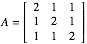
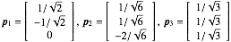
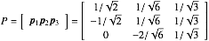
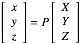
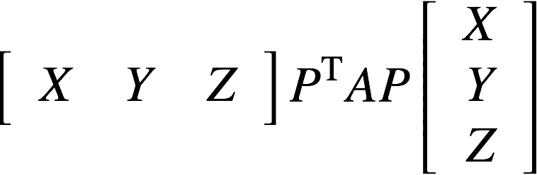
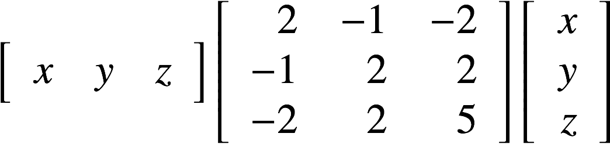

例 行列の演算
2次形式：
2x2 + 2y2 + 2z2 + 2xy + 2yz + 2zx = 3
の標準系を求めよう．
1. 作業ディレクトリの作成
作業ディレクトリに「QuadricSurface」というディレクトリを作成して，移動して下さい．
$ mkdir QuadricSurface
$ cd QuadricSurface
2. main.ccp の作成
「main.cpp」というファイルを作成して下さい．
ここでは，3×3行列と3次元ベクトルを使用するために<kvs/Matrix33>と<kvs/Vector3>をインクルードします．
#include <kvs/Vector3>
#include <kvs/Matrix33>
int main( void )
{
return ( 0 );
}
3. 行列とベクトルの宣言
2次形式は行列とベクトルを用いて：
で書き表すことができます．
ここで，実対称行列
をdouble型の3次正方行列として宣言します．
クラス名はkvs::Matrix33d となり，ここで，3は行数及び列数，d はdouble型を表しています．
kvs::Matrixクラスは，C言語と同様にA[0][0] = 1; のように添字演算子[]を使うこともでき，
また，kvs::Vectorクラスと同様にコンストラクタを用いて変数宣言と同時に値を代入することもできます．
kvs::Matrix33d A( 2.0, 1.0, 1.0,
1.0, 2.0, 1.0,
1.0, 1.0, 2.0 );
行列Aの固有値 λ1 = λ2 = 1, λ3 = 4より，正規直交な固有ベクトル
を3次元double型のベクトルとして宣言します．
これらの固有ベクトルを列ベクトルとして並べた直交行列 P
をdouble型の3次正方行列 kvs::Matrix33dとして宣言します．
各要素はkvs::Vectorクラスに定義されているx, y, z 成分を戻り値とするメソッドx(), y(), z()を利用します．
// 固有ベクトル
kvs::Vector3d p1 ( 1.0/sqrt(2.0), -1.0/sqrt(2), 0.0 );
kvs::Vector3d p2 ( 1.0/sqrt(6.0), 1.0/sqrt(6.0), -2.0/sqrt(6.0) );
kvs::Vector3d p3 ( 1.0/sqrt(3.0), 1/sqrt(3.0), 1/sqrt(3.0) );
// 直交行列
kvs::Matrix33d P ( p1.x(), p2.x(), p3.x(),
p1.y(), p2.y(), p3.y(),
p1.z(), p2.z(), p3.z() );
4. 行列の演算

とおけば，この2次形式は
であらわすことができます．
ここで，kvs::Matrixクラスには転置列を計算するメソッドtransposed()が定義されており，
それを利用してPTAPを計算します．
kvs::Matrix33d L = P. transposed() * A * P;
std::cout << L << std::endl;
より，この2次形式の標準系は：
X2 + Y2 + 4Z2 = 3
となり，楕円形を表していることが分かります．
5. まとめ
以上をまとめたプログラムはこちら： QuadricSurface.tgz
6. コンパイルと実行
作成したプログラムをコンパイル，実行してみましょう．
KVSプログラムをコンパイルするためにはkvsmakeコマンドを用いてMakefileを作成すると簡単にコンパイルを行うことができます．
$ kvsmake -G <-- Makefile の作成
$ kvsmake <-- コンパイル
エラーなくコンパイルできたら，実行してみましょう．
以下のような対角行列と標準形が出力られる実行結果が得られると思います．
$ ./QuadricSurface
1 0 0
0 1 -5.55112e-17
0 0 4
1 X^2 + 1 Y^2 + 4 Z^2 = 3
以上のようにして行列の演算を行うことができます．
行列演算クラスとしては他に，
LU分解（<kvs/ LUDecomposition>），
QR分解（<kvs/ QRDecomposition>），
固有値分解（<kvs/EigenDecomposition>）
等のクラスも用意されています．
問題 標準系を求めよう
2次形式：
2x2 + 2y2 + 5z2 - 2xy + 4yz -4zx = 2
の標準系を求めよう．
ヒント：2次形式の行列とベクトルを用いて
で表すことができます．
固有値分解クラスを利用して直交行列を求めてみましょう．
（ヒント）
// 固有値分解クラス
kvs::EigenDecomposer<double> eigen( A );
// 固有ベクトルを並べた行列Pを作成
const kvs::Matrix<double>& P = eigen.eigenVectors() ;
// 固有ベクトルが行ベクトルで格納されているので(列ベクトル用の）直交行列として配置し直す
// （転置をとっても同じ）
kvs::Matrix<double> F = { { P[0][0], P[1][0], P[2][0] },
{ P[0][1], P[1][1], P[2][1] },
{ P[0][2], P[1][2], P[2][2] } };
使い方はサンプルソース：
(KVSのソースをダウンロードしたディレクトリ) kvs-src/Example/Numeric/EigenDecomposition
をみてみよう．
※ EigenDecomposition クラスに渡す行列の型はMatrix33 クラスのオブジェクトではなく一般的な Matrix クラスのオブジェクトであることに注意しましょう
Modefied at June 25, 2014
at May 11, 2021